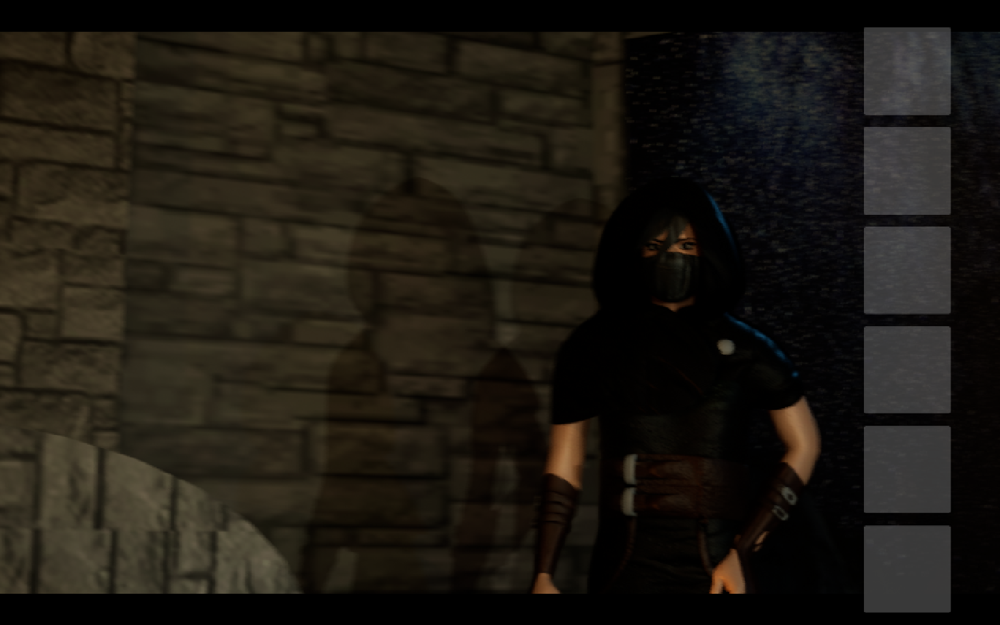
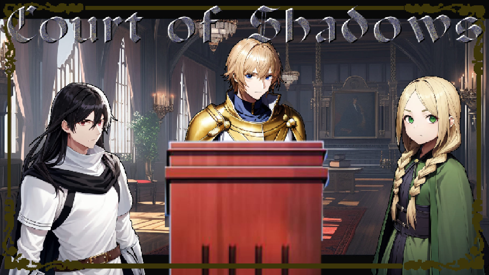
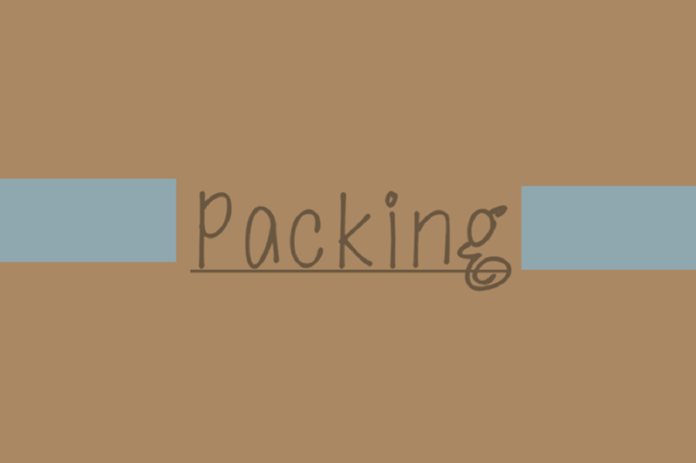
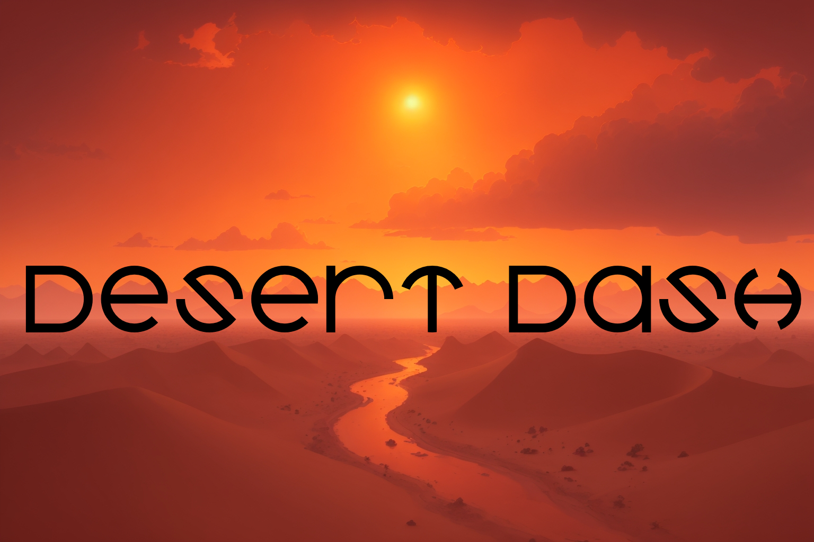

A game my group (Kolten Morales, Xane Ammerman, and Dian Nyguen) and I made in 5 weeks. Our group created the models, textures, and programmed it. Programmed in Unreal Engine.
A game I made for the Neumont Summer Game Jam 2023 under the theme "You are the villain". Programmed alongside my classmate Kolten Morales in Ren'Py Visual Novel creator. Placed 28th/41 entries.
Court of Shadows on itch.io A game I made for the Neumont Winter Game Jam 2024 under the theme "Just 5 Minutes". Programmed alongside my classmate Kolten Morales in Unity. Placed 13th/24 entries.
Packing on itch.io A multiplayer game I made for the Neumont Spring Game Jam 2024 under the theme "Keep Moving". Programmed alongside my classmate Kolten Morales in Unity, making use of the Alteruna Multiplayer SDK. Placed __/__ entries.
Desert Dash on itch.io 